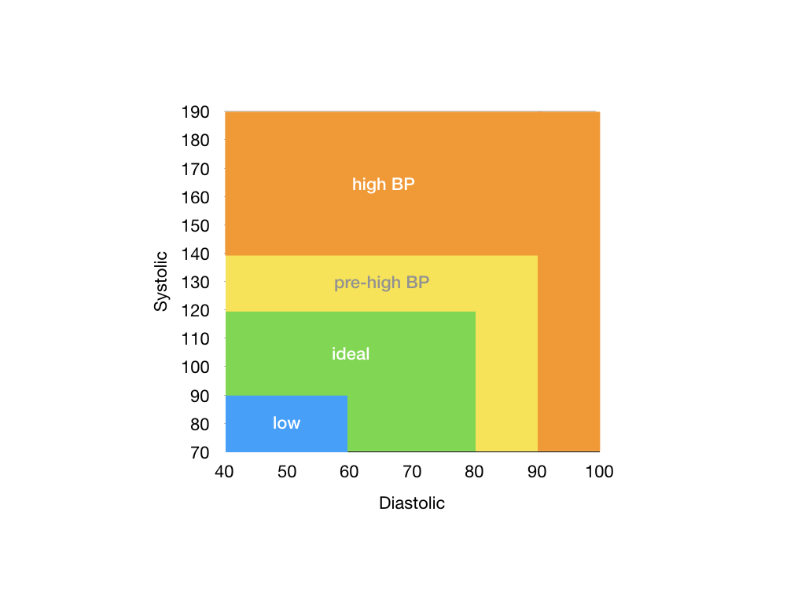

Exercise 1: Conditionals
Prerequisite
You have completed Exercise 0.
Learning Outcomes
Be comfortable writing simple C programs that involve conditional statements and logical expressions.
Deadline
This is part of CS1010 formative assessment. Submit before 11 September 2023, 23:59 to receive feedback and earn your achievement "badges".
Acceptance Link
The link to accept the exercise is not available publicly. Visit Canvas for the link.
Concepts and Difficulty
| Question | Conditions | Comparison | Logical Expression | Recursion | Difficulty | |
|---|---|---|---|---|---|---|
| 1 | Odd | |||||
| 2 | Sum | |||||
| 3 | Candy | |||||
| 4 | Triangle | |||||
| 5 | Leap | |||||
| 6 | Multiple | |||||
| 7 | Date^ | |||||
| 8 | Pressure^ | |||||
| 9 | GCD^ | |||||
| 10 | Digits | |||||
| 11 | Power | |||||
| 12 | Suffix | |||||
| 13 | Taxi |
^: Questions 7 - 9 serve as in-class exercise during lab session in Week 4.
Question 1: Odd
Write a program odd (source file odd.c) that reads in an integer \(n\) and prints the smallest odd number that is larger than \(n\) to the standard output.
Your program must find the answer within a function that takes in an integer and returns an integer called find_next_odd.
Sample Runs
1 2 3 4 5 6 | |
Note: There is a less straightforward way to solve this question without using conditional statements. See if you can solve it this way! (Credit: Hu Jialun (cohort 20/21))
Question 2: Sum
Write a program sum (source file sum.c) that reads in two integers, \(x\) and \(y\), ignores any negative numbers, and prints the sum of the remaining (non-negative) numbers. If both numbers are negatives, the sum is 0.
Your program must find the answer within a function named compute_sum_if_positive.
Sample Runs
1 2 3 4 5 6 7 8 9 10 11 12 | |
Question 3: Candy
Beng needs to pack a bunch of candies into as few boxes as possible. Each box can hold only a certain number of candies.
Write a program candy that reads from the standard input two positive integers representing the number of candies that Beng has and the maximum number of candies that a box can hold.
Your program must contain a function called compute_num_of_boxes that computes the minimum number of boxes that Beng needs to pack all the candies into. The function should take in the number of candies and the maximum number of candies a box can hold as arguments, and return the number of boxes needed.
Your program then prints, to the standard output, the number of boxes needed.
For example, if there are 8 candies and each box can hold a maximum of 2 candies, then Beng needs 4 boxes. If each box can hold a maximum of 3 candies, then only 3 boxes are needed.
Sample Runs
1 2 3 4 5 6 | |
Question 4: Triangle
In a triangle, the sum of the length of any two sides is always longer than of the third side. The area of the triangle with sides \(a\), \(b\), \(c\), can be computed with Heron's formula:
where \(s\) is half of the perimeter:
Write a program triangle that reads from standard input three positive integers representing the three sides of a triangle. The program then either
- prints, to the standard output, Possible if it is possible to create such a triangle, followed by the area of the triangle; or
- prints Impossible if it is impossible to create such a triangle.
For instance, suppose that you are given the three sides of a triangle 3 4 5. Then the program prints:
1 2 | |
Suppose that you are given the three sides 4 4 10. Then the program prints:
1 | |
Your solution must contain two functions is_possible_triangle, which returns whether the input is a possible triangle, and compute_area, which computes the area of the triangle.
Sample Runs
1 2 3 4 5 6 7 | |
Question Credit: Albert Sutiono (cohort 20/21)
Question 5: Leap Year
A leap year is a calendar year containing an extra day to synchronize the calendar to seasons and astronomical events. In the Gregorian calendar, years that are multiples of four (except for years divisible by 100 but not by 400) are leap years.
Complete the program leap.c so that it reads in an integer representing a year from the standard input and prints out "
Your program should include a bool function is_leap_year that takes in the input year and returns true if the input is a leap year and returns false otherwise.
Sample Runs
1 2 3 4 5 6 7 8 9 10 11 12 | |
Question 6: Multiple
Given two integers, we want to check if one is a multiple of the other. By definition, 0 is the multiple of any number.
Write a program multiple that reads two integers from the standard input, and prints true to the standard output if one integer is the multiple of the other. Print false otherwise.
Your program should include a bool function is_multiple that takes in the two integers and return if one is the multiple of the other.
Sample Runs
1 2 3 4 5 6 7 8 9 | |
Question 7: Date
A date consists of two integers, a month (1 - 12) and a day (1 - 31). Given three dates (of the same year), we want to find out if the given dates are sorted in increasing order.
Write a program date (source file date.c) that reads in three pairs of integers from the standard input, in the order of \(m_1\), \(d_1\), \(m_2\), \(d_2\), \(m_3\), and \(d_3\). Print yes to the standard output the date (\(m_1, d_1\)) is strictly before (\(m_2, d_2\)), and the date (\(m_2, d_2\)) is strictly before (\(m_3, d_3\)). Print no otherwise.
Think: Can you break this problem down into a simpler sub-problem?
Sample Runs
1 2 3 4 5 6 7 8 9 10 | |
Question 8: Pressure
A blood pressure measurement is given by two numbers, \(s/d\), where \(s\) is the systolic reading and \(d\) is the diastolic reading.
Given the two readings, the following diagram classifies a given blood pressure measurement into four regions: low, ideal, pre-high, and high.

Readings that fall on the borders are considered to be in the region to the top and to the right. For instance, blood pressure 100/80 and 120/70 are considered to fall under the "pre-high" region.
Write a program pressure that does the following:
- Reads in a blood pressure measurement from the standard input as two positive integers,
- Determines which region the given blood pressure measurement belongs to according to the chart above, and
- Prints the region (either
low,ideal,pre-high, orhigh) to the standard output,
Steps 2 and 3 should be solved in the function below:
1 2 3 4 | |
Sample Runs
1 2 3 4 5 6 | |
Question 9: GCD
The GCD, or greatest common divisor, of two integers \(a\) and \(b\), is the largest positive integer that divides both \(a\) and \(b\). For example, the GCD of 48 and 18 is 6.
The GCD of two numbers \(a\) and \(b\) is the same as the GCD of \(b\) and \(a\) % \(b\). To find the GCD of \(a\) and \(b\), we thus repeatedly replace (\(a\), \(b\)) with (\(b\), \(a\) % \(b\)) until we have the pair (\(c\), 0). \(c\) is the GCD of \(a\) and \(b\).
For example, to find the GCD of 48 and 18, (48, 18) \(\rightarrow\) (18, 12) \(\rightarrow\) (12, 6) \(\rightarrow\) (6, 0). The GCD of 48 and 18 is 6.
Write a program gcd (source file gcd.c) that reads in two positive integers, \(a\) and \(b\), and prints their GCD. The computation should be performed in a function called compute_gcd that takes in \(a\) and \(b\) and returns their GCD.
Your program must solve this problem recursively, without using any loops.
Sample Runs
1 2 3 4 5 6 | |
Question 10: Digits
Write a program digits.c that reads in a non-negative integer, and prints the sum of the cube of individual digits in this integer.
For instance, if the input is 1933091, then the sum is \(1^3 + 9^3 + 3^3 + 3^3 + 0^3 + 9^3 + 1^3 = 1514\).
You must not use a loop to solve this. Instead, write a recursive function sum_of_digits_cubed. This function takes in an integer and returns the sum of the cube of individual digits of that integer, and it should call itself to solve this question.
A solution that uses a loop in any way will be considered incorrect for this question.
Sample Runs
1 2 3 4 5 6 | |
Question 11: Power
Write a program power.c that reads in two values: (i) an integer base \(x\) and (ii) a non-negative integer exponent \(y\), and compute \(x^y\).
You must not use a loop to solve this. Instead, write a recursive function compute_power that takes in takes in the base \(x\) and the exponent \(y\) and returns \(x^y\). This function should call itself to solve this question.
A solution that uses a loop in any way will be considered incorrect for this question.
Sample Runs
1 2 3 4 5 6 7 8 9 | |
Question 12: Suffix
In English, an ordinal number is written with numerals, followed by its letter suffixes. For instance: 1st, 2nd, 3rd, 4th, 11th, 31st, etc. The rule is that a number that ends with digit 1 should have the suffix "st" (except if it ends with 11), a number that ends with 2 should have the suffix "nd" (except if it ends with 12), and a number that ends with 3 should have a suffix "rd" (except if it ends with 13). All other numbers should end with "th".
Write a program suffix that reads an integer number from the standard input and prints out the number with its ordinal suffix.
Your program should include a void function print_with_suffix(long n) that takes in the input and prints out the number followed by its suffix.
Sample Runs
1 2 3 4 5 6 7 8 9 10 11 12 | |
Question 13: Taxi Fare
The taxi fare structure in Singapore must be one of the most complicated in the world! Check out: http://www.taxisingapore.com/taxi-fare/.
For this exercise, we will just use the following simplified fare structure:
| Basic Fare | |
|---|---|
| The first 1 km or less (Flag Down) | $3.90 |
| Every 400 m thereafter or less, up to 10 km | $0.24 |
| Every 350 m thereafter or less, after 10 km | $0.24 |
| Surcharge | ||
|---|---|---|
| Monday to Friday | 6:00 to 9:29 | 25% of metered fare |
| Daily | 18:00 to 23:59 | 25% of metered fare |
| Daily | 0:00 (midnight) to 5:59 | 50% of metered fare |
Note that the surcharge is applicable based on the boarding time. For instance, if the trip started at 17:50 and ended at 18:10, then no surcharge is incurred.
Write a program taxi.c that computes the taxi fare. The program, called taxi, takes in four integers as inputs:
- The first is the day of the week. It can only be the value
0to6,0denotes Sunday,1denotes Monday, ..., and6denotes Saturday. - The second and the third inputs denote the starting time of the trip: the second input indicates the hours since midnight of the stated day, and the third input indicates the minutes since the beginning of the stated hours.
- The fourth and final input is the distance of the trip, in meters.
Your program should print a single floating point number, which is the cost of the fare in dollars.
Examine the following examples for more details:
Example 1
1 2 3 | |
- Start: Mon 17:59
- Distance: 1,000 m
The metered fare is $3.90 since the distance traveled is 1 km. The boarding time is before 18:00, so there is no surcharge. The total fare is $3.90.
Example 2
1 2 3 | |
- Start: Mon 17:57
- Distance: 2,000 m
The metered fare for the first 1,000 m (1 km) is $3.90. The next 1,000 m is charged $0.24 for every 400 m (or less) traveled. The passenger is charged an additional 3 x $0.24 = $0.72, giving the total metered fare of $4.62.
The boarding time is before 18:00, so there is no surcharge.
Example 3
1 2 3 | |
- Start: Mon 05:50
- Distance: 15,000 m
The metered fare for the first 1,000 m (1 km) is $3.90. The next 9,000 m is charged $0.24 for every 400 m traveled. The passenger is charged an additional 23 x $0.24 = $5.52. The remaining 5,000 m is charged $0.24 for every 350 m (or less) traveled. The passenger is charged an additional 15 x $0.24 = $3.60. The metered fare is $3.90 + $5.52 + $3.60 = $13.02
The boarding time is before 6:00, so there is a 50% surcharge. The total fare is $19.53.
Instructions
-
Break down this problem into multiple sub-problems, each can be solved by a function. Write one function to answer each question below:
- given the day of the week, is it a weekday?
- given the time of boarding, does it fall under the morning peak hour (6:00 - 9:29)?
- given the time of boarding, does it fall under the evening peak hour (18:00 - 23:59)?
- given the time of boarding, does it fall under the midnight peak hour (0:00 - 5:59)?
-
Furthermore, break the calculation of fare down into two parts: the basic metered fare and the surcharge. Each of these can be a function. Think about the four inputs to the
taxiprogram. Which one is needed to compute the metered fare? Which ones are used to compute the surcharge? Pass in the appropriate arguments to the function that computes the metered fare and the function that computes the surcharge.